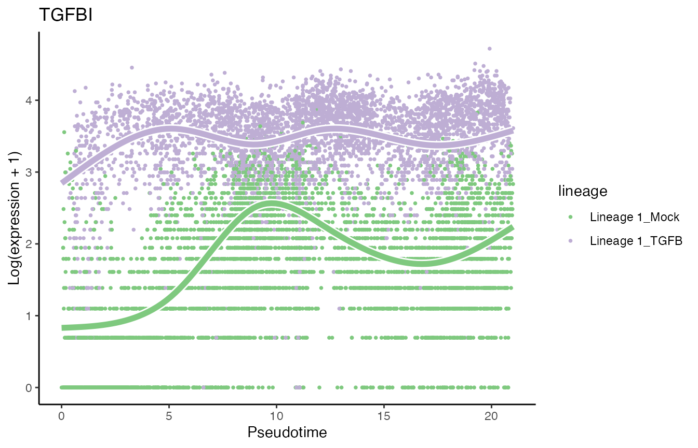

Analysis of the TGFB datataset
Hector Roux de Bézieux, Koen Van den Berge and Kelly Street
TGFB.RmdOverview
We reproduce a lot of code from the Bioc 2020 trajectory workshop.
Dataset
The dataset we will be working with concerns a single-cell RNA-sequencing dataset consisting of two different experiments, which correspond to two treatments. McFaline-Figueroa et al. (McFaline-Figueroa et al. 2019) studied the epithelial-to-mesenchymal transition (EMT), where cells spatially migrate from the epithelium to the mesenchyme during development.
Load data
The data is imported using a function from the package. We then normalized using Seurat(Stuart et al. 2019) and compute reduced dimension coordinates with UMAP McInnes, Healy, and Melville (2018).
tgfb <- condimentsPaper::import_TGFB()
library(Seurat)
########################
### Split by condition and convert to Seurat
########################
assays(tgfb)$logcounts <- log1p(assays(tgfb)$counts)
tgfbMock <- tgfb[ ,colData(tgfb)$pheno$treatment_id=='Mock']
tgfbTGFB <- tgfb[ ,colData(tgfb)$pheno$treatment_id=='TGFB']
soMock <- as.Seurat(tgfbMock)
soTGFB <- as.Seurat(tgfbTGFB)
########################
### Normalize
########################
soMock <- SCTransform(soMock, verbose = FALSE)
soTGFB <- SCTransform(soTGFB, verbose = FALSE)
########################
### Integrate
########################
dtlist <- list(Mock = soMock, TGFB = soTGFB)
intfts <- SelectIntegrationFeatures(object.list = dtlist,
nfeatures = nrow(tgfb))
dtlist <- PrepSCTIntegration(object.list = dtlist,
anchor.features = intfts)
anchors <- FindIntegrationAnchors(object.list = dtlist,
normalization.method = "SCT",
anchor.features = intfts)
integrated <- IntegrateData(anchorset = anchors,
normalization.method = "SCT")
integrated <- RunPCA(integrated)
integrated <- RunUMAP(integrated, dims = 1:50)
## convert back to singleCellExperiment
tgfb <- as.SingleCellExperiment(integrated, assay = "RNA")
data("tgfb", package = "condimentsPaper")
df <- bind_cols(
as.data.frame(reducedDims(tgfb)$UMAP),
as.data.frame(colData(tgfb)[, -3])
) %>%
sample_frac(1)
p1 <- ggplot(df, aes(x = UMAP_1, y = UMAP_2, col = pheno.treatment_id)) +
geom_point(size = .7) +
scale_color_brewer(palette = "Accent") +
labs(col = "Treatment")
p1
p2 <- ggplot(df, aes(x = UMAP_1, y = UMAP_2, col = pheno.spatial_id)) +
geom_point(size = .7) +
scale_color_brewer(palette = "Dark2") +
labs(col = "Spatial ID")
p2
scores <- condiments::imbalance_score(
Object = df %>% select(UMAP_1, UMAP_2) %>% as.matrix(),
conditions = df$pheno.treatment_id,
k = 20, smooth = 40)
df$scores <- scores$scaled_scores
p3 <- ggplot(df, aes(x = UMAP_1, y = UMAP_2, col = scores)) +
geom_point(size = .7) +
scale_color_viridis_c(option = "C") +
labs(col = "Scores")
p3
Trajectory Inference and Differential Topology
To estimate the trajectory, we use slingshot (Street et al. 2018).
library(slingshot)
tgfb <- slingshot(tgfb, reducedDim = 'UMAP',
clusterLabels = colData(tgfb)$pheno$spatial_id,
start.clus = 'inner', approx_points = 100)
set.seed(821)
topologyTest(SlingshotDataSet(tgfb), tgfb$pheno$treatment_id, rep = 100,
methods = "KS_mean", threshs = .01)## Generating permuted trajectories## Running KS-mean test## method thresh statistic p.value
## 1 KS_mean 0.01 0.013306 0.3847918
df <- bind_cols(
as.data.frame(reducedDims(tgfb)$UMAP),
as.data.frame(colData(tgfb)[,-3])
) %>%
sample_frac(1)
curve <- slingCurves(tgfb)[[1]]
p4 <- ggplot(df, aes(x = UMAP_1, y = UMAP_2, col = slingPseudotime_1)) +
geom_point(size = .7) +
scale_color_viridis_c() +
labs(col = "Pseudotime") +
geom_path(data = curve$s[curve$ord, ] %>% as.data.frame(),
col = "black", size = 1.5)
p4
Differential progression
p5 <- ggplot(df, aes(x = slingPseudotime_1)) +
geom_density(alpha = .8, aes(fill = pheno.treatment_id), col = "transparent") +
geom_density(aes(col = pheno.treatment_id), fill = "transparent",
guide = FALSE, size = 1.5) +
labs(x = "Pseudotime", fill = "Treatment") +
guides(col = "none", fill = guide_legend(
override.aes = list(size = 1.5, col = c("#7FC97F", "#BEAED4"))
)) +
scale_fill_brewer(palette = "Accent") +
scale_color_brewer(palette = "Accent")## Warning: Ignoring unknown parameters: guide
p5
progressionTest(SlingshotDataSet(tgfb), conditions = tgfb$pheno$treatment_id)## Registered S3 method overwritten by 'cli':
## method from
## print.boxx spatstat.geom## # A tibble: 1 × 3
## lineage statistic p.value
## <chr> <dbl> <dbl>
## 1 1 0.176 2.2e-16Differential expression
We use tradeSeq (Van den Berge et al. 2020).
Differential expression between conditions
condRes <- conditionTest(tgfb, l2fc = log2(2))
condRes$padj <- p.adjust(condRes$pvalue, "fdr")
mean(condRes$padj <= 0.05, na.rm = TRUE)## [1] 0.1807149
sum(condRes$padj <= 0.05, na.rm = TRUE)## [1] 1906Visualize most and least significant gene
library(RColorBrewer)
scales <- brewer.pal(3, "Accent")[1:2]
# plot genes
oo <- order(condRes$waldStat, decreasing = TRUE)
# most significant gene
p6 <- plotSmoothers(tgfb, assays(tgfb)$counts,
gene = rownames(assays(tgfb)$counts)[oo[1]],
alpha = 1, border = TRUE, curvesCols = scales) +
scale_color_manual(values = scales) +
ggtitle(rownames(assays(tgfb)$counts)[oo[1]])## Scale for 'colour' is already present. Adding another scale for 'colour',
## which will replace the existing scale.
# Second most significant gene
p7 <- plotSmoothers(tgfb, assays(tgfb)$counts,
gene = rownames(assays(tgfb)$counts)[oo[2]],
alpha = 1, border = TRUE, curvesCols = scales) +
scale_color_manual(values = scales) +
ggtitle(rownames(assays(tgfb)$counts)[oo[2]])## Scale for 'colour' is already present. Adding another scale for 'colour',
## which will replace the existing scale.
# least significant gene
p8 <- plotSmoothers(tgfb, assays(tgfb)$counts,
gene = rownames(assays(tgfb)$counts)[oo[nrow(tgfb)]],
alpha = 1, border = TRUE, curvesCols = scales) +
scale_color_manual(values = scales) +
ggtitle(rownames(assays(tgfb)$counts)[oo[nrow(tgfb)]])## Scale for 'colour' is already present. Adding another scale for 'colour',
## which will replace the existing scale.
p6
p7
p8
Heatmaps of genes DE between conditions
Below we show heatmaps of the genes DE between conditions. The DE genes in the heatmaps are ordered according to a hierarchical clustering on the TGF-Beta condition.
library(cowplot)
library(scales)
### based on mean smoother
yhatSmooth <-
predictSmooth(tgfb, gene = conditionGenes, nPoints = 50, tidy = FALSE) %>%
log1p()
yhatSmoothScaled <- t(apply(yhatSmooth,1, scales::rescale))
heatSmooth_TGF <- pheatmap(yhatSmoothScaled[, 51:100],
cluster_cols = FALSE,
show_rownames = FALSE, show_colnames = FALSE, main = "TGF-Beta", legend = FALSE,
silent = TRUE
)
matchingHeatmap_mock <-
pheatmap(yhatSmoothScaled[heatSmooth_TGF$tree_row$order, 1:50],
cluster_cols = FALSE, cluster_rows = FALSE,
show_rownames = FALSE, show_colnames = FALSE, main = "Mock",
legend = FALSE, silent = TRUE
)
p9 <- plot_grid(heatSmooth_TGF[[4]], matchingHeatmap_mock[[4]], ncol = 2)
p9
Gene set enrichment analysis
This is done using the fgsea package (Korotkevich, Sukhov, and Sergushichev 2016).
geneSets <- msigdbr(species = "Mus musculus", category = "C5", subcategory = "BP") %>%
mutate(gene_symbol = toupper(gene_symbol)) %>%
filter(gene_symbol %in% names(tgfb))
m_list <- geneSets %>% split(x = .$gene_symbol, f = .$gs_name)
statsCond <- condRes$waldStat
names(statsCond) <- rownames(condRes)
eaRes <- fgsea(pathways = m_list, stats = statsCond, nperm = 5e4, minSize = 10)## Warning in fgsea(pathways = m_list, stats = statsCond, nperm = 50000,
## minSize = 10): You are trying to run fgseaSimple. It is recommended to use
## fgseaMultilevel. To run fgseaMultilevel, you need to remove the nperm argument
## in the fgsea function call.## Warning in preparePathwaysAndStats(pathways, stats, minSize, maxSize, gseaParam, : There are ties in the preranked stats (0.01% of the list).
## The order of those tied genes will be arbitrary, which may produce unexpected results.| pathway | pval | padj |
|---|---|---|
| GOBP_BIOLOGICAL_ADHESION | 0.0000200 | 0.0774385 |
| GOBP_LOCOMOTION | 0.0000400 | 0.0774385 |
| GOBP_CELL_MIGRATION | 0.0000600 | 0.0774385 |
| GOBP_ANATOMICAL_STRUCTURE_FORMATION_INVOLVED_IN_MORPHOGENESIS | 0.0001000 | 0.0967981 |
| GOBP_REGULATION_OF_CELL_ADHESION | 0.0003600 | 0.2581282 |
| GOBP_TRANSCRIPTION_BY_RNA_POLYMERASE_III | 0.0004000 | 0.2581282 |
| GOBP_EXTERNAL_ENCAPSULATING_STRUCTURE_ORGANIZATION | 0.0006200 | 0.3291134 |
| GOBP_CELL_POPULATION_PROLIFERATION | 0.0006800 | 0.3291134 |
| GOBP_VASCULATURE_DEVELOPMENT | 0.0008800 | 0.3656816 |
| GOBP_TAXIS | 0.0013600 | 0.3656816 |
| GOBP_MITOCHONDRIAL_RNA_METABOLIC_PROCESS | 0.0013800 | 0.3656816 |
| GOBP_CIRCULATORY_SYSTEM_DEVELOPMENT | 0.0014000 | 0.3656816 |
| GOBP_CELL_JUNCTION_ASSEMBLY | 0.0014200 | 0.3656816 |
| GOBP_MOTOR_NEURON_AXON_GUIDANCE | 0.0014601 | 0.3656816 |
| GOBP_REGULATION_OF_CELLULAR_COMPONENT_MOVEMENT | 0.0014800 | 0.3656816 |
| GOBP_BLOOD_VESSEL_MORPHOGENESIS | 0.0016400 | 0.3656816 |
| GOBP_TUBE_DEVELOPMENT | 0.0016800 | 0.3656816 |
| GOBP_TUBE_MORPHOGENESIS | 0.0017000 | 0.3656816 |
| GOBP_N_TERMINAL_PROTEIN_AMINO_ACID_MODIFICATION | 0.0018000 | 0.3668137 |
| GOBP_CELL_PROJECTION_ORGANIZATION | 0.0020600 | 0.3988080 |
Running with Monocle 3
Trajectory inference and differential progression
clusters <- colData(tgfb)$pheno$spatial_id
names(clusters) <- colnames(tgfb)
clusters[reducedDim(tgfb, "UMAP")[,1] > 0] <- "outer"
tgfb$condition <- tgfb$pheno$treatment_id
cds <- condimentsPaper:::.running_monocle(tgfb, clusters, start = "inner",
params = list(minimal_branch_len = 20),
keep_cds = TRUE)## Setting options('download.file.method.GEOquery'='auto')## Setting options('GEOquery.inmemory.gpl'=FALSE)## No preprocess_method specified, using preprocess_method = 'PCA'## Warning: `select_()` was deprecated in dplyr 0.7.0.
## Please use `select()` instead.
cds$cds@colData$conditions <- tgfb$condition
plot_cells(cds$cds, color_cells_by = "conditions", label_branch_points = FALSE,
label_roots = FALSE, label_leaves = FALSE, cell_size = .7,
label_groups_by_cluster = FALSE, trajectory_graph_segment_size = 1.5,
trajectory_graph_color = "black", label_cell_groups = FALSE) +
scale_color_brewer(palette = "Accent") +
theme_classic() +
theme(legend.position = "bottom",
rect = element_blank())
df <- data.frame(pseudotime = cds$pseudotime[,1],
Treatment = cds$conditions)
ggplot(df, aes(x = pseudotime)) +
geom_density(alpha = .8, aes(fill = Treatment), col = "transparent") +
geom_density(aes(col = Treatment), fill = "transparent",
guide = FALSE, size = 1.5) +
guides(col = "none", fill = guide_legend(
override.aes = list(size = 1.5, col = c("#7FC97F", "#BEAED4"))
)) +
scale_fill_brewer(palette = "Accent") +
scale_color_brewer(palette = "Accent") +
theme(legend.position = "bottom")## Warning: Ignoring unknown parameters: guide
progressionTest(cds$pseudotime, cds$cellWeights, conditions = cds$conditions)## # A tibble: 1 × 3
## lineage statistic p.value
## <chr> <dbl> <dbl>
## 1 1 0.351 2.2e-16Fit GAM
set.seed(3)
gamModels <- fitGAM(counts = as.matrix(assays(tgfb)$counts),
pseudotime = cds$pseudotime[,1],
cellWeights = cds$cellWeights[,1],
conditions = factor(cds$conditions),
nknots = 5)
mean(rowData(gamModels)$tradeSeq$converged)
condRes_monocle <- conditionTest(gamModels, l2fc = log2(2))
condRes_monocle$padj <- p.adjust(condRes_monocle$pvalue, "fdr")
condRes_monocle <- condRes_monocle %>% mutate(gene = rownames(.))
data("condRes_monocle", package = "condimentsPaper")
condRes <- bind_rows(
"Monocle" = condRes_monocle,
"Slingshot" = condRes %>% mutate(gene = rownames(.)),
.id = "Trajectory"
)
condRes %>%
select(Trajectory, gene, waldStat) %>%
pivot_wider(names_from = "Trajectory", values_from = "waldStat") %$%
cor(.$`Monocle`, .$`Slingshot`, use = "complete.obs")## [1] 0.9663965
condRes %>%
select(Trajectory, gene, padj) %>%
pivot_wider(names_from = "Trajectory", values_from = "padj") %>%
filter(!is.na(Monocle) & !is.na(Slingshot)) %>%
mutate(Monocle = if_else(Monocle <= .05, "sig", "not_sig"),
Slingshot = if_else(Slingshot <= .05, "sig", "not_sig")) %>%
group_by(Monocle, Slingshot) %>%
summarise(n = n())## `summarise()` has grouped output by 'Monocle'. You can override using the `.groups` argument.## # A tibble: 4 × 3
## # Groups: Monocle [2]
## Monocle Slingshot n
## <chr> <chr> <int>
## 1 not_sig not_sig 8282
## 2 not_sig sig 365
## 3 sig not_sig 135
## 4 sig sig 1500DASeq
tgfb$condition <- tgfb$pheno$treatment_id
colnames(tgfb) <- paste0("cell", seq_len(ncol(tgfb)))
rownames(reducedDim(tgfb)) <- colnames(tgfb)
tgfb$Sample <- sample(1:5, ncol(tgfb), replace = TRUE)
tgfb$Sample[tgfb$condition == "TGFB"] <-
tgfb$Sample[tgfb$condition == "TGFB"] + 10
tgfb$Sample <- as.character(tgfb$Sample)
info <- colData(tgfb)[, c("Sample", "condition")] %>%
as.data.frame() %>%
distinct()
da_cells <- getDAcells(
X = reducedDim(tgfb, "UMAP"),
cell.labels = tgfb$Sample,
labels.1 = info$Sample[info$condition == "Mock"],
labels.2 = info$Sample[info$condition == "TGFB"],
k.vector = seq(50, 500, 50),
do.plot = TRUE,
plot.embedding = reducedDim(tgfb, "UMAP")
)## Calculating DA score vector.
## Running GLM.
## Test on random labels.
## Setting thresholds based on permutation
da_regions <- getDAregion(
X = reducedDim(tgfb, "UMAP"),
da.cells = da_cells,
cell.labels = tgfb$Sample,
labels.1 = info$Sample[info$condition == "Mock"],
labels.2 = info$Sample[info$condition == "TGFB"],
do.plot = TRUE,
plot.embedding = reducedDim(tgfb, "UMAP")
)## Using min.cell = 50## Warning: The following arguments are not used: row.names## Warning: Feature names cannot have underscores ('_'), replacing with dashes
## ('-')## Warning: The following arguments are not used: row.names## Warning: Feature names cannot have underscores ('_'), replacing with dashes
## ('-')## Warning: The following arguments are not used: row.names## Warning: Feature names cannot have underscores ('_'), replacing with dashes
## ('-')## Removing 8 DA regions with cells < 50.## Warning in wilcox.test.default(x = idx.label.ratio[labels.2],
## idx.label.ratio[labels.1]): cannot compute exact p-value with ties
df <- bind_cols(
as.data.frame(reducedDims(tgfb)$UMAP),
as.data.frame(colData(tgfb)[, -3])
)
df <- df[da_regions$cell.idx, ]
df$region <- da_regions$da.region.label %>% as.character()
df <- df %>%
select(UMAP_1, UMAP_2, region, condition) %>%
full_join(da_regions$DA.stat %>%
as.data.frame %>%
mutate(region = rownames(.)))## Joining, by = "region"
ggplot(df, aes(x = UMAP_1, y = UMAP_2, col = DA.score)) +
geom_point(size = .7) +
scale_colour_gradient2() +
labs(col = "DA Score\nfrom DASeq") +
theme(legend.position = "bottom")Milo
logcounts(tgfb) <- log1p(counts(tgfb))
milo <- Milo(tgfb)
milo <- buildGraph(milo, reduced.dim = "UMAP", d = 2, k = 20,
BPPARAM = BiocParallel::SerialParam())## Constructing kNN graph with k:20
milo <- makeNhoods(milo, refined = TRUE, reduced_dims = "UMAP", d = 2)## Checking valid object## Warning in (function (to_check, X, clust_centers, clust_info, dtype, nn, :
## detected tied distances to neighbors, see ?'BiocNeighbors-ties'
milo$Sample <- sample(1:5, ncol(tgfb), replace = TRUE)
milo$Sample[milo$condition == "TGFB"] <-
milo$Sample[milo$condition == "TGFB"] + 5
milo$Sample <- as.character(milo$Sample)
design.df <- colData(milo)[, c("condition", "Sample")] %>%
as.data.frame()
milo <- miloR::countCells(milo, meta.data = design.df, sample = "Sample")## Checking meta.data validity## Counting cells in neighbourhoods
milo <- calcNhoodDistance(x = milo, d = 2, reduced.dim = "UMAP")
design.df <- design.df %>% distinct()
rownames(design.df) <- design.df$Sample
da_results <- testNhoods(milo, design = ~ condition, design.df = design.df)## Using TMM normalisation## Performing spatial FDR correction withk-distance weighting
milo <- buildNhoodGraph(milo)
da_results <- groupNhoods(milo, da_results, max.lfc.delta = 2)## Found 221 DA neighbourhoods at FDR 10%## nhoodAdjacency found - using for nhood grouping
plotNhoodGraphDA(milo, da_results, layout = "UMAP", alpha = 0.1) +
guides(edge_width = "none",
size = "none",
fill = guide_colorbar(title = "logFC\nfrom Milo")) +
theme_classic() +
labs(x = "UMAP_1", y = "UMAP_2") +
theme(legend.position = "bottom",
legend.title = element_text(size = 11))
Session info
## R version 4.1.0 (2021-05-18)
## Platform: x86_64-apple-darwin17.0 (64-bit)
## Running under: macOS Big Sur 10.16
##
## Matrix products: default
## BLAS: /Library/Frameworks/R.framework/Versions/4.1/Resources/lib/libRblas.dylib
## LAPACK: /Library/Frameworks/R.framework/Versions/4.1/Resources/lib/libRlapack.dylib
##
## locale:
## [1] en_US.UTF-8/en_US.UTF-8/en_US.UTF-8/C/en_US.UTF-8/en_US.UTF-8
##
## attached base packages:
## [1] parallel stats4 stats graphics grDevices utils datasets
## [8] methods base
##
## other attached packages:
## [1] scales_1.1.1 cowplot_1.1.1
## [3] RColorBrewer_1.1-2 magrittr_2.0.1
## [5] DAseq_1.0.0 miloR_1.0.0
## [7] edgeR_3.34.0 limma_3.48.3
## [9] monocle3_1.0.0 openxlsx_4.2.4
## [11] msigdbr_7.4.1 fgsea_1.18.0
## [13] pheatmap_1.0.12 condiments_1.1.04
## [15] ggplot2_3.3.5 SeuratObject_4.0.2
## [17] Seurat_4.0.3 tidyr_1.1.3
## [19] slingshot_2.1.1 TrajectoryUtils_1.0.0
## [21] princurve_2.1.6 SingleCellExperiment_1.14.1
## [23] SummarizedExperiment_1.22.0 Biobase_2.52.0
## [25] GenomicRanges_1.44.0 GenomeInfoDb_1.28.2
## [27] IRanges_2.26.0 S4Vectors_0.30.0
## [29] BiocGenerics_0.38.0 MatrixGenerics_1.4.3
## [31] matrixStats_0.60.1 tradeSeq_1.7.04
## [33] dplyr_1.0.7
##
## loaded via a namespace (and not attached):
## [1] scattermore_0.7 ModelMetrics_1.2.2.2
## [3] R.methodsS3_1.8.1 Ecume_0.9.1
## [5] ragg_1.1.3 knitr_1.33
## [7] R.utils_2.10.1 irlba_2.3.3
## [9] DelayedArray_0.18.0 data.table_1.14.0
## [11] rpart_4.1-15 flowCore_2.4.0
## [13] GEOquery_2.60.0 RCurl_1.98-1.4
## [15] generics_0.1.0 ScaledMatrix_1.0.0
## [17] leidenbase_0.1.3 GillespieSSA2_0.2.8
## [19] RANN_2.6.1 RcppXPtrUtils_0.1.1
## [21] proxy_0.4-26 future_1.21.0
## [23] tzdb_0.1.2 xml2_1.3.2
## [25] spatstat.data_2.1-0 lubridate_1.7.10
## [27] httpuv_1.6.1 assertthat_0.2.1
## [29] viridis_0.6.1 gower_0.2.2
## [31] xfun_0.24 hms_1.1.0
## [33] jquerylib_0.1.4 babelgene_21.4
## [35] evaluate_0.14 promises_1.2.0.1
## [37] fansi_0.5.0 igraph_1.2.6
## [39] DBI_1.1.1 htmlwidgets_1.5.3
## [41] spatstat.geom_2.2-2 purrr_0.3.4
## [43] ellipsis_0.3.2 RSpectra_0.16-0
## [45] cytolib_2.4.0 RcppParallel_5.1.4
## [47] deldir_0.2-10 sparseMatrixStats_1.4.0
## [49] vctrs_0.3.8 remotes_2.4.0
## [51] ROCR_1.0-11 abind_1.4-5
## [53] caret_6.0-88 cachem_1.0.5
## [55] withr_2.4.2 ggforce_0.3.3
## [57] sctransform_0.3.2 goftest_1.2-2
## [59] cluster_2.1.2 lazyeval_0.2.2
## [61] crayon_1.4.1 glmnet_4.1-2
## [63] recipes_0.1.16 pkgconfig_2.0.3
## [65] labeling_0.4.2 tweenr_1.0.2
## [67] nlme_3.1-152 vipor_0.4.5
## [69] transport_0.12-2 nnet_7.3-16
## [71] rlang_0.4.11 globals_0.14.0
## [73] lifecycle_1.0.0 miniUI_0.1.1.1
## [75] rsvd_1.0.5 rprojroot_2.0.2
## [77] polyclip_1.10-0 lmtest_0.9-38
## [79] Matrix_1.3-4 Rhdf5lib_1.14.2
## [81] zoo_1.8-9 dyngen_1.0.2
## [83] beeswarm_0.4.0 ggridges_0.5.3
## [85] png_0.1-7 viridisLite_0.4.0
## [87] bitops_1.0-7 R.oo_1.24.0
## [89] rhdf5filters_1.4.0 KernSmooth_2.23-20
## [91] pROC_1.17.0.1 DelayedMatrixStats_1.14.0
## [93] shape_1.4.6 stringr_1.4.0
## [95] parallelly_1.27.0 readr_2.0.0
## [97] beachmat_2.8.0 memoise_2.0.0
## [99] plyr_1.8.6 ica_1.0-2
## [101] zlibbioc_1.38.0 compiler_4.1.0
## [103] dqrng_0.3.0 fitdistrplus_1.1-5
## [105] cli_3.0.1 XVector_0.32.0
## [107] listenv_0.8.0 patchwork_1.1.1
## [109] pbapply_1.4-3 MASS_7.3-54
## [111] mgcv_1.8-36 tidyselect_1.1.1
## [113] RProtoBufLib_2.4.0 stringi_1.7.3
## [115] textshaping_0.3.5 highr_0.9
## [117] yaml_2.2.1 BiocSingular_1.8.1
## [119] locfit_1.5-9.4 ggrepel_0.9.1
## [121] grid_4.1.0 sass_0.4.0
## [123] spatstat.linnet_2.3-0 fastmatch_1.1-0
## [125] tools_4.1.0 future.apply_1.7.0
## [127] rstudioapi_0.13 foreach_1.5.1
## [129] gridExtra_2.3 prodlim_2019.11.13
## [131] farver_2.1.0 Rtsne_0.15
## [133] DropletUtils_1.12.1 ggraph_2.0.5
## [135] proxyC_0.2.0 digest_0.6.27
## [137] shiny_1.6.0 lava_1.6.9
## [139] Rcpp_1.0.7 scuttle_1.2.0
## [141] later_1.2.0 RcppAnnoy_0.0.18
## [143] httr_1.4.2 kernlab_0.9-29
## [145] colorspace_2.0-2 fs_1.5.0
## [147] tensor_1.5 reticulate_1.20
## [149] splines_4.1.0 statmod_1.4.36
## [151] lmds_0.1.0 uwot_0.1.10
## [153] spatstat.utils_2.2-0 pkgdown_1.6.1
## [155] graphlayouts_0.7.1 plotly_4.9.4.1
## [157] systemfonts_1.0.2 xtable_1.8-4
## [159] jsonlite_1.7.2 spatstat_2.2-0
## [161] tidygraph_1.2.0 condimentsPaper_1.0
## [163] timeDate_3043.102 ipred_0.9-11
## [165] R6_2.5.1 cydar_1.16.0
## [167] pillar_1.6.2 htmltools_0.5.1.1
## [169] mime_0.11 glue_1.4.2
## [171] fastmap_1.1.0 BiocParallel_1.26.2
## [173] BiocNeighbors_1.10.0 class_7.3-19
## [175] codetools_0.2-18 utf8_1.2.2
## [177] lattice_0.20-44 bslib_0.2.5.1
## [179] spatstat.sparse_2.0-0 tibble_3.1.4
## [181] ggbeeswarm_0.6.0 leiden_0.3.8
## [183] gtools_3.9.2 zip_2.2.0
## [185] survival_3.2-11 rmarkdown_2.9
## [187] dynutils_1.0.6 desc_1.3.0
## [189] munsell_0.5.0 rhdf5_2.36.0
## [191] e1071_1.7-7 GenomeInfoDbData_1.2.6
## [193] iterators_1.0.13 HDF5Array_1.20.0
## [195] reshape2_1.4.4 gtable_0.3.0
## [197] spatstat.core_2.3-0